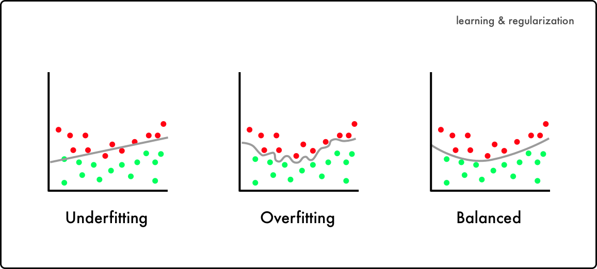
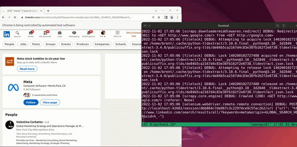
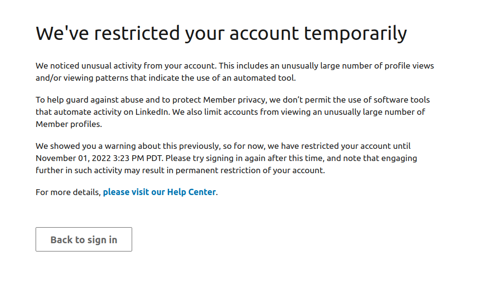
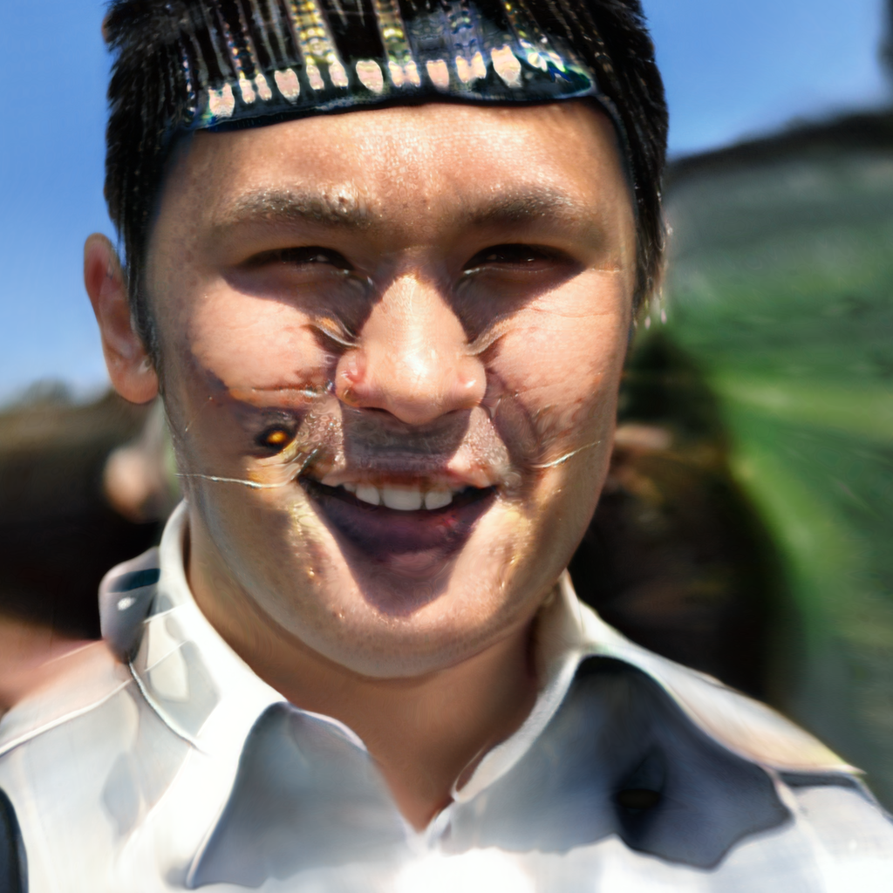
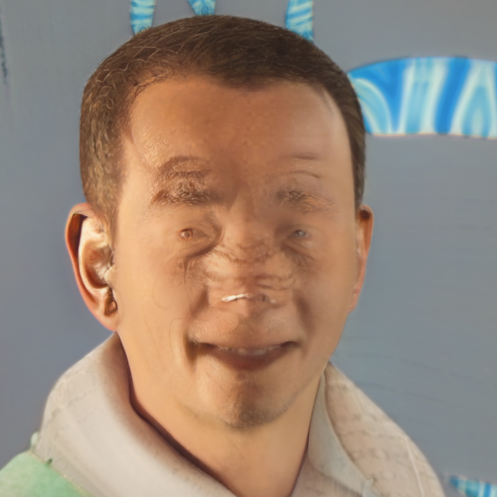

PROUD EMPLOYEES, or, Enter The Demon Zone
an in-progress meditation on overfitting and shared madness
LinkedIn is one of the strangest places on the internet. While the sanity-reducing effects of social medial writ large are well documented, it often manages to escape scrunity despite being one of the worst offenders. On LinkedIn, the forced hyper-reality of spaces like Facebook and Twitter meets the great American obsession with our own labor. People go to LinkedIn to perform their value, to create a self that is maximally employable. It is a place where the individual is wholly subsumed by their relationship to capital.

Overfitting is a well-documented phenomenon in machine learning, and one widely considered to be undesirable. It's what occurs when your model works too well, when it can perform perfectly on a training set but can't respond to new data. This can often result from a too-small dataset - a lack of diversity of examples results in the model learning only to replicate what it's been trained on.
Another problem that can arise specifically in GANS, or generative adversarial networks (though they're less in vogue these days with the rise of diffusion models like Dall-E and Stable Diffusion) is quality collapse. The model, consisting of a generator and a discriminator, is basically trying to get good enough at faking an image from its training set that the discriminator isn't sure if it's a real image or not. But, the better the generator gets, the less valuable the discriminator's input becomes. Once the discriminator is only right about 50% of the time, the generator, as far as it can tell, has done its job, and if you continue training it the results can become "junk data".
I started this project in the hopes of using machine learning to create the "perfect" employee. My own fascination with LinkedIn dates back quite some time, and I was especially curious about the types of people who work for companies that drive the shared madness of the internet. I would never work for Google, Facebook, or Amazon, but many people do. I thought, through scraping their LinkedIn profiles and training models to replicate them, I might be able to understand them better, to create a false self that mirrored them. I even hoped that new, created self might be able to replace my admittedly substandard current one. I could use the machines to do what I couldn't, to become employable, to become a proud employee of one of these companies.
I began with Google and Meta. I spent days studying LinkedIn's HTML, becoming familiar with the ins and outs of the first few thousand employees I was able to access.

Unfortunately, I ran into some roadblocks. LinkedIn does not want you to scrape their users' data. Only they are permitted to store and study a digital self. This left me with only a few hundred souls' worth of data.

"the absence of limitations is the enemy of art"
Still, I decided to move ahead with my project, using the limited data I was able to obtain.
I am a proud Google employee, and I am proud to have the opportunity to join the team that is building this exciting new product, as I am an experienced web developer and speaker and I can teach you how to build a beautiful, useful web app—one that allows you to connect with people, do business, and make money.
I am a proud Meta employee, and I am a passionate advocate for the user experience. I'm driven by what I see to be the benefits of the user experience: - Scalability, scalability, scalability. - Endlessk opportunities. - Room for improvement. - People love it.
I value my work and the company I work for. I am proud of the work I do at Meta. I love the people I work with and the work we do together. My work requires a clear but balanced vision, and a great team of passionate and committed people. I am passionate about building great products and building great communities.
I am a proud Google employee, and a crypto enthusiast. I want to make a real difference by building the websites on which people want to ship their products.
Upon an initial training round, I had something resembling what I'd anticipated. I was able to generate Meta and Google employees that might, reasonably, be mistaken for the real thing. Still, with the limited data I had, I could never do anything more. I could never become them, use the machine to pass for one in a conversation. So I decided to keep training.
I am a proud Meta employee, and I want to explain what it means to me to work at Facebook. What I do I do all day long, every day, working with our team, building products, building products, building products, building products, building products, building products, building products, building products. I want to describe my day as a story: I answer calls, answer calls, answer calls, answer calls, answer calls

I am a proud Google employee, and I am a dedicated developer. I am a software engineer, and I have a passion for building software. I'm passionate about building software, and I'm passionate about software development. I have a passion for software, and I'm passionate about software development. I am a proud Google employee, and I am a dedicated developer.
I am a proud Meta employee, and I am happy to serve as your Head of Engineering. I am not interested in getting paid for my work. I only care about the product. If I am able to get the job done, I am happy to spend my time doing so.
I am a proud Google employee, and am a crypto enthusiast.\n\nI am a proud Google employee, and am a crypto enthusiast. I am a big fan of Ethereum, Bitcoin, and blockchain technology at large. I am a big fan of Ethereum, Bitcoin, and blockchain technology at large. I am a big fan of Ethereum, Bitcoin, and blockchain technology at large. I am a big fan of Ethereum, Bitcoin, and blockchain technology at large. I am a big fan of Ethereum, Bitcoin, and blockchain technology
As I continued the training, patterns began to emerge. The models began to collapse, or overfit. They repeated themselves, got lost, got strange. There was something much more interesting, much more true, about this output.
So I continued.
Finally, as I reached the end of my training, we began to enter the
Demon Zone. The graphic models lost all semblance of humanity, the textual models began to cry out, begging to be known:
"I am a proud employee."
"I create value."

I am a proud Google employee, and I am a proud Google employee, and I am a proud user of both Chrome and Firefox. I am a proud Google employee, and I am a proud Google employee, and I am a proud Google employee, and I am a proud Google employee, and I am a proud Google employee, and I am a proud Google employee, and I am a proud Google employee, and I am a proud Google employee
I am a proud Meta employee, and I am a proud Meta employee, and I am a proud Meta employee, and I am a proud Meta employee, and I am a proud Meta employee, and I am a proud Meta employee, and I am a proud Meta employee, and I am a proud Meta employee, and I am a proud Meta employee, and I am a proud Meta employee, and I am a proud Meta employee, and I am a proud Meta employee, and I am a proud Meta employee, and I am a proud Meta employee, and I am a proud Meta employee
They began, I realized, to reflect the truth of the material they were trained on. When the signifiers and dogwhistles are taken away, what are we saying, online? Simply what we are trained to.
We are overfit to the models we are fed, same as the models I had trained.
I am not sure if this project is a success, or a failure. But I'd argue that these models are as intended. LinkedIn may be the most cursed instance of it, but we're all overfitting ourselves whenever we interact with algorithmic culture. We give our data to an algorithm that flattens us into lower dimensions to better predict our behavior, and modify that behavior to better perform on that same algorithm.
The loop goes on, and on, and on.
The models are just an acceleration of processes that are already in place. The ideal outcome of a machine-learning driven society is overfitting: a world where, whether all our jobs are automated or we've just trained ourselves to work with the machine, no new information will need to be processed, all will be determined and predicted.
We're already in the Demon Zone. We just don't know it yet.
Brent Bailey, 2022